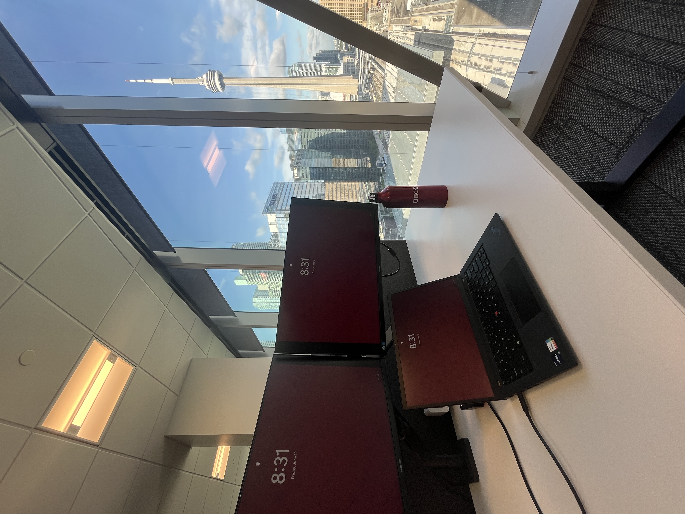
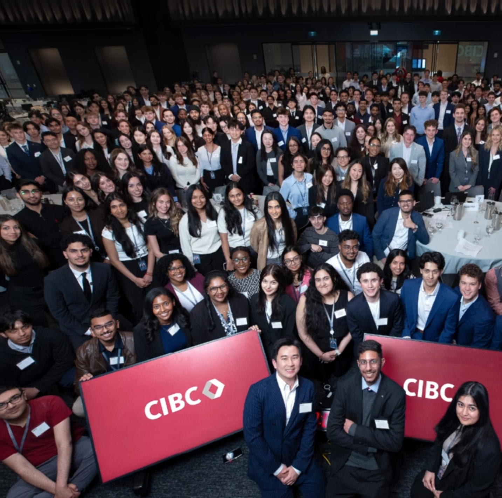

Introduction
During my Summer 2026 co-op term, I had the opportunity to be a Threat Intelligence Analyst Co-op on CIBC's Fusion Threat Intelligence team. This page outlines the tasks I worked on, my goals, the skills I strengthened, and what I learned throughout this experience.
About CIBC
CIBC, also known as the Canadian Imperial Bank of Commerce, is one of Canada's most prominent financial institutions, with over 15 million clients globally. The bank's history dates back to 1867, and has amassed a team of around 50,000 employees working to help make their clients' ambitions a reality. I began my co-op term at Commerce Court, CIBC's former headquarters in downtown Toronto, and about a month into my work term we moved to CIBC SQUARE, the bank's new headquarters, and were among the first teams to move into the cyber incident command center in CIBC Square's North tower.
Commerce Court — CIBC's former headquarters
CIBC SQUARE North — New CIBC headquarters building
CIBC SQUARE Park — A park available to employees that connects the two CIBC Square towers

The view from my desk at the office
Going into this term, I had previous experience in cybersecurity automation at Scotiabank, but I wanted to expand my understanding of cybersecurity and gain a different perspective, and learn more about how the automations I had previously worked on were used. My work on CIBC's Threat Intelligence team allowed me to explore how a large organization like the bank would identify emerging cyber threats, collect intelligence, assess risks and communicate findings to relevant stakeholders. Throughout the term, I was able to strengthen my technical skills while developing a much stronger understanding of the intelligence side of cybersecurity.
The Fusion Threat Intelligence team focuses on identifying potential, emerging and active threats to CIBC, combining operational and strategic intelligence to help the bank understand what threats are developing that could affect the organization. The operational side of the team focuses on daily monitoring, collection, and analysis of intelligence, while the strategic side of the team looks more broadly at emerging threats that could affect the bank.
As a Threat Intelligence Analyst Co-op, I worked on both the operational and strategic sides of the team, which I enjoyed because this role combined cybersecurity, research, analysis, programming, and communication.
One of my main technical projects during my term involved updating PowerShell automations used by the team to improve reporting processes for software vulnerabilities, compromised payment cards, and vendor data breaches. These scripts retrieved and processed JSON data through APIs from our vendor platforms, reducing manual work for analysts and improving the efficiency of our reporting processes.
Beyond this project, I was also able to take on a variety of tasks performed by the analysts on my team, including preparing reports on Canadian business breaches, third-party vendor incidents, and software vulnerabilities. These investigations required me to research available intelligence, assess the potential impact to CIBC, and identify appropriate countermeasures. I also gathered daily cybersecurity, fraud, and geopolitical intelligence, identifying developments that could represent an imminent threat to the bank and communicating relevant findings to stakeholders. Another important part of my work involved dark web monitoring, where I used vendor platforms to search underground forums for exposed information and potential threats, analyzed the information I found, and reported relevant findings to the appropriate teams for mitigation and potential takedown efforts.
Student Learning Academy
During the summer I was also able to be a part of CIBC's Student Learning Academy, a program designed to support the development of the around 500 co-op students across the organization during the Summer 2026 term. The Student Learning Academy hosted sessions focused on professional development, networking, and learning more about the bank, giving students opportunities to connect with recruiters and other co-op students and develop practical skills such as writing resumes and cover letters. These events allowed me to meet students working in areas outside of cybersecurity and gain a broader understanding of the different career paths available within CIBC.

Student Learning Academy — Summer 2026: Connecting with co-op students from across CIBC during a professional development session
I was also selected to participate in SPARK, a smaller program within CIBC's co-op program for students who received particularly positive feedback from their managers. SPARK provided additional opportunities to network with CIBC leaders and other high-performing co-op students. One of the highlights was the opportunity to attend a fireside chat with Richard Jardim, Chief Technology and Information Officer, and Pallavi Tripathi, SVP of Capital Markets, Treasury and Commercial Technology. They discussed their career journeys, shared advice for students beginning their careers, and answered our questions about the future of the tech industry that is constantly evolving.
Skills I Developed
In this role, I set out to deepen my understanding of cybersecurity, strengthen my technical knowledge and build my confidence writing reports in a technical business environment. Some of the skills I developed and strengthened during this term were:
- Threat Intelligence: The most significant skill I developed was my understanding of threat intelligence. I learned how analysts collect information from different sources, validate it, determine its relevance, and assess how it could affect an organization. Using platforms such as Intel 471, Flashpoint, Netcraft, Google Threat Intelligence, ThreatConnect, and Microsoft security tools, I gained practical experience with the tools used to support intelligence collection and analysis.
- PowerShell & Automation: My previous experience gave me a strong foundation in Python automation. At CIBC, I expanded this skill set by working with PowerShell to automate repetitive intelligence and reporting processes. This experience showed me that programming skills can be valuable even in roles that are not primarily software development positions. Understanding how to automate repetitive tasks allowed me to spend more time focusing on analysis rather than manual processes.
- Report Writing: I also strengthened my ability to communicate technical information through threat intelligence briefs and reports. My work often involved taking complex information from multiple sources and presenting the important findings in a concise and structured format so that other cybersecurity teams could assess the potential impact. This taught me that effective cybersecurity communication is not simply about presenting technical information. It is about explaining what happened, why it matters, who could be affected, and what should be done next.
Learning Goals
At the beginning of my work term, I established four learning goals to guide my development:
Learning Goal 1: Technological Literacy
- Goal: Strengthen my proficiency with cybersecurity and intelligence platforms used by the Fusion Threat Intelligence team.
- Action Plan: Learn how to use tools such as ThreatConnect, Flashpoint, Netcraft, Microsoft security tools and internal monitoring platforms by shadowing team members, reviewing documentation and completing assigned tasks.
- Measure of Success: Become comfortable using the team's primary tools to support threat analysis, phishing investigations and intelligence collection activities.
- Reflection: Over the course of the work term, I developed a strong understanding of the cybersecurity intelligence used by the Fusion Threat Intelligence team at CIBC. I worked on PowerShell scripts to improve automated processes used by the team, used platforms such as Intel 471 and Google Threat Intelligence to put together reports on third-party software vulnerabilities and data breaches, and navigated the Flashpoint platform to conduct dark web searches to support intelligence collection, threat monitoring and investigation. I also reviewed team SOP documentation to better understand how these tools fit into the team's operational and strategic intelligence processes.
Learning Goal 2: Written Communication
- Goal: Strengthen my ability to communicate cybersecurity intelligence clearly for both technical and non-technical audiences.
- Action Plan: Assist with drafting intelligence summaries, documenting investigative findings and creating organized notes in Microsoft Suite tools such as Word, PowerPoint and SharePoint.
- Measure of Success: Write documentation that is clear, accurate and requires minimal revisions from team members.
- Reflection: Throughout the work term, I strengthened my ability to communicate cybersecurity information clearly within my team and to other teams across the bank. I used automated scripts and Microsoft Office tools to put together Threat Intelligence briefs based on my analysis, which would be sent out to various teams within cybersecurity at CIBC to be assessed for impact to the bank. I also worked in SharePoint to organize information, maintain records and support the team's documentation processes. Feedback from my colleagues helped me improve my written work, and by the end of the term I was more skilled and confident at presenting detailed cybersecurity information in a concise and organized format.
Learning Goal 3: Teamwork
- Goal: Strengthen my ability to collaborate effectively within a multidisciplinary cybersecurity team.
- Action Plan: Work collaboratively with analysts on tasks, communicate progress regularly and support team initiatives involving threat monitoring, reporting and intelligence gathering.
- Measure of Success: Build positive working relationships with team members and contribute effectively to team projects and activities.
- Reflection: During my work term, I developed my ability to collaborate within a multidisciplinary team. I worked with team members across different areas of my team and regularly asked questions and sought guidance when learning new tools and processes used by the team. I participated in discussions and made strong contributions when assigned tasks, making me stand out on the team. Working alongside experienced analysts gave me a better understanding of how operational and strategic threat intelligence teams collaborate. This experience helped me become more comfortable contributing to a professional team environment.
Learning Goal 4: Personal Organization & Time Management
- Goal: Improve my ability to manage multiple priorities and tasks in a fast-paced work environment.
- Action Plan: Use Outlook, Microsoft To Do and OneNote to organize assignments, track progress and manage long and short term deadlines.
- Measure of Success: Complete assigned work on schedule while maintaining a high quality of work.
- Reflection: Throughout the term, I improved my ability to organize and manage my workload in a professional environment. I utilized Outlook and OneNote to keep track of my assignments and deadlines during my co-op term. I would categorize certain meetings and emails in Outlook to group related items across different projects and ongoing tasks I was working on. I would use OneNote to keep a list of tasks I have to complete, to jot down quick notes and to manage my deadlines. By the end of my work term, I was more comfortable managing my workload and ensuring that all assigned tasks were completed on time and accurately.
Conclusion
My work term at CIBC gave me a perspective on cybersecurity that I had not experienced in my previous co-ops, and I appreciated the opportunity to explore the intelligence and investigative side of cybersecurity. The biggest lesson I will take from this experience is that effective cybersecurity is not only about having the right technology. It also requires people who can collect information, recognize patterns, assess risk, and communicate what matters. I leave with a much stronger understanding of cybersecurity and a clearer idea of the type of work I want to pursue in the future.
Acknowledgement: Information about CIBC was referenced from their corporate profile website.